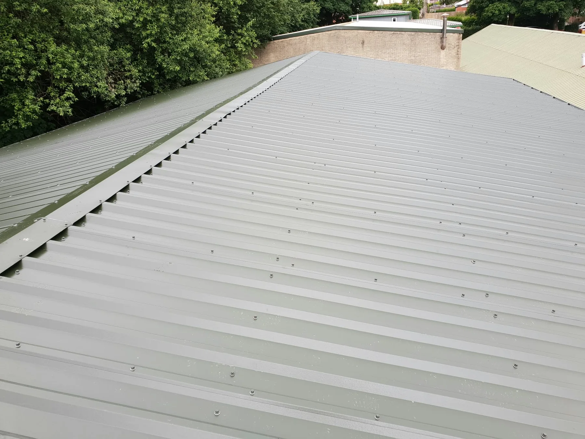

Project portfolio
Mytholmroyd Community Centre
Sowerby Bridge
Overcladding of the existing felt sports hall roof, including verges, ridge flashings and Trimline gutters.
- Project
- Mytholmroyd Community Centre
- Location
- Sowerby Bridge
- Scope
- Sports hall roof overclad
- Contractor
- Project Cladding Services
The project story
Sports hall roof overclad
Overcladding of the existing felt sports hall roof, including verges, ridge flashings and Trimline gutters.
The photographs show insulation and profiled metal sheets being installed over the existing roof, followed by the finished ridge and verge details.
Explore the relevant serviceProject photographs
A closer view.
Select a photograph to enlarge it.
Have a similar project in mind?
Send the site location, a short brief and any photographs or drawings. We’ll help you take the next step.